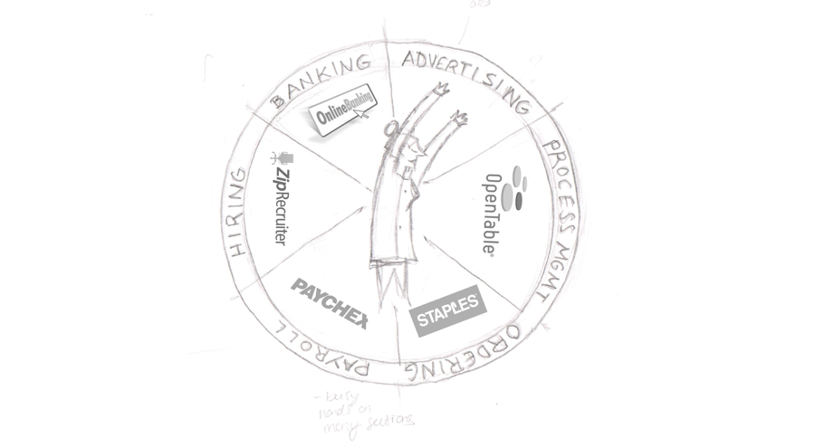
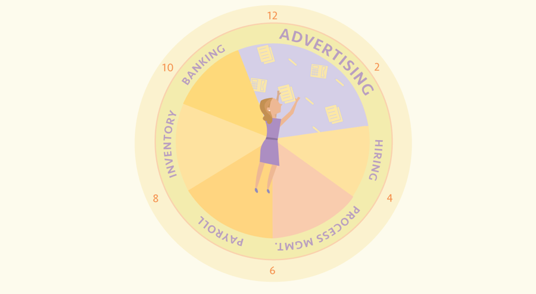
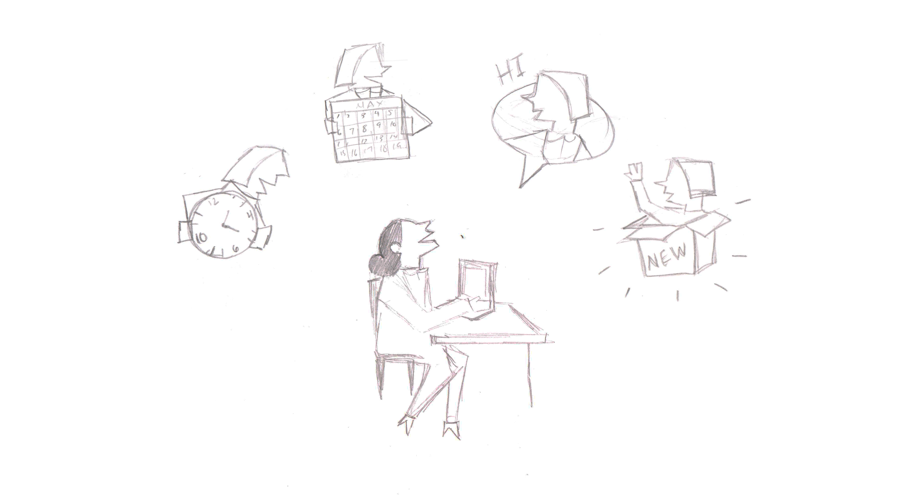
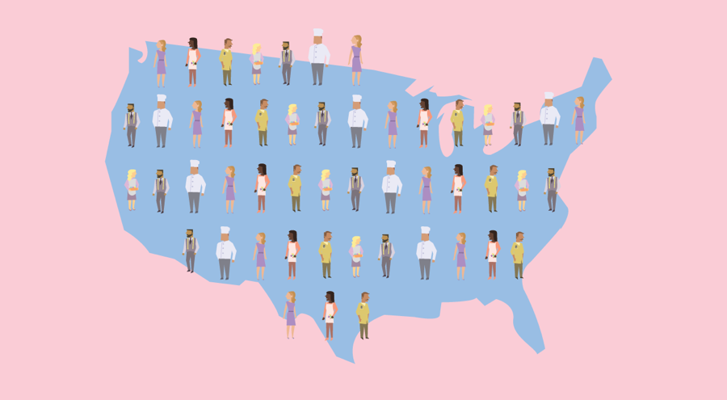
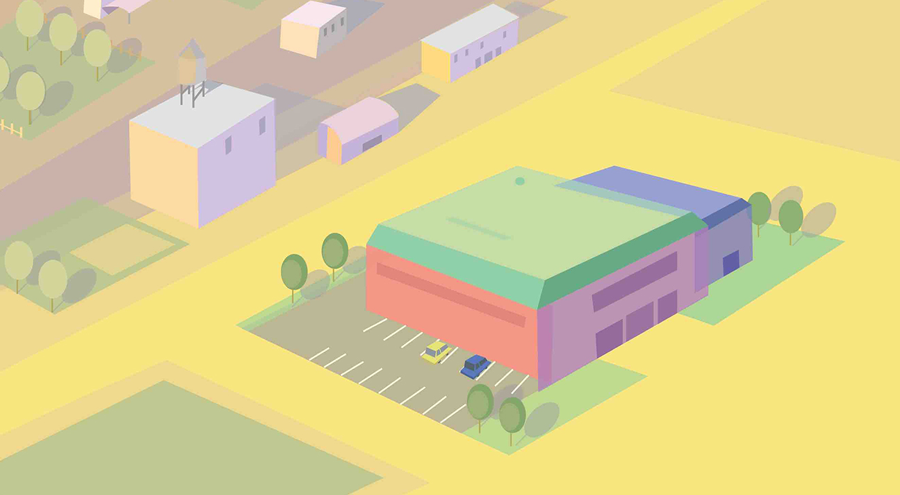
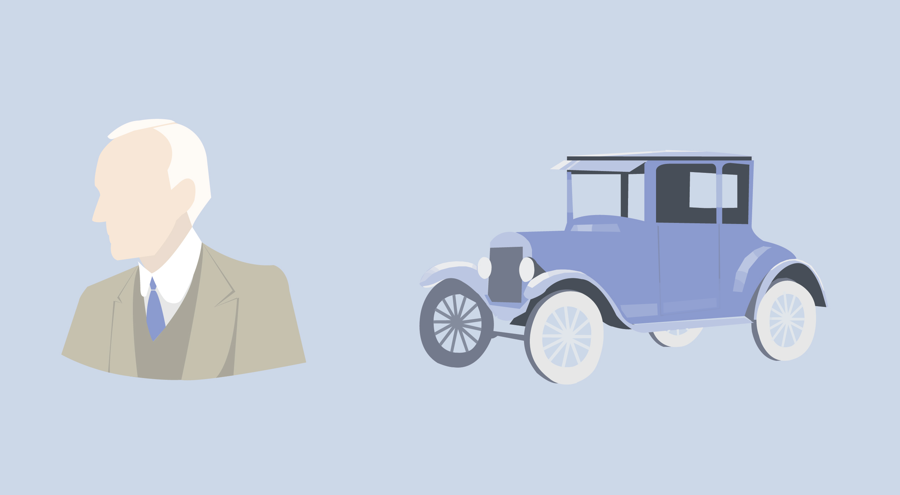
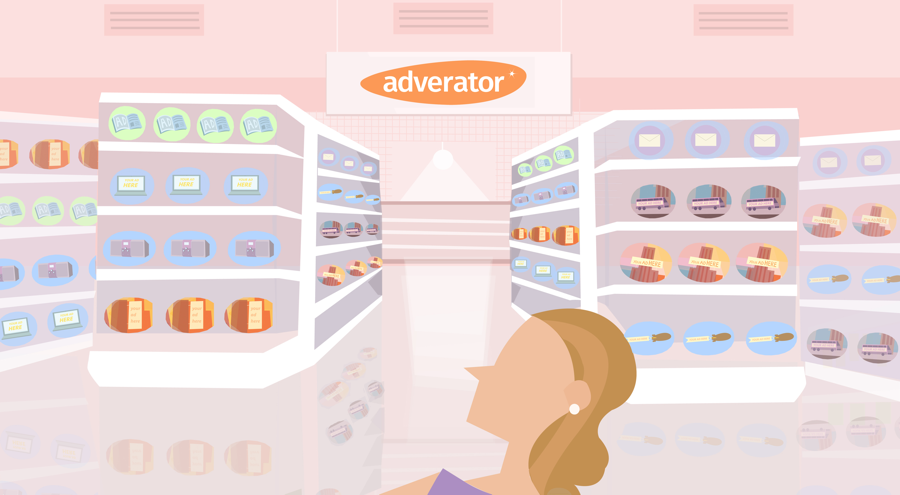
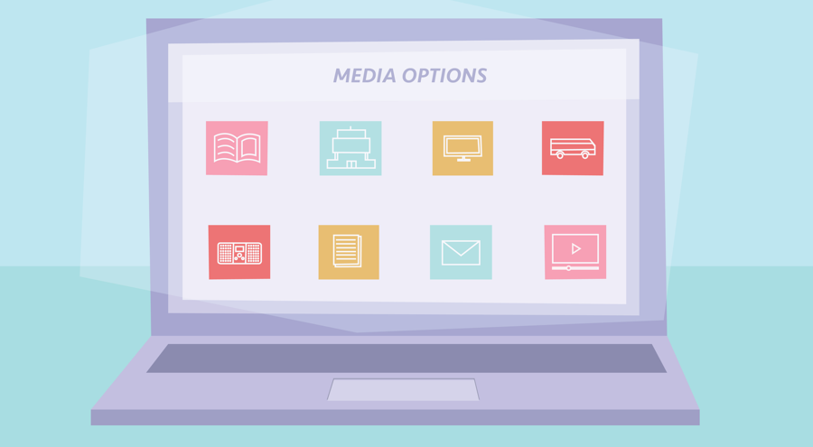
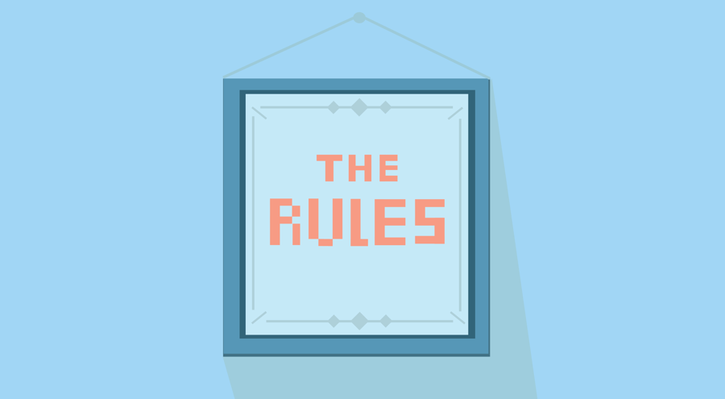

June 2015 | Adverator
Adverator Next Presentation
Rob Verdino · Illustration
The Adverator next presentation was a deck developed to introduce the core purpose and function of the services Adverator provides for small businesses. Each component of the brand story was to be visualized through engaging illustrations and infographics that would complement the talk track of the presentation.
The main challenge we aimed to solve is:
Visualize the story behind Adverator with a style that effectively represents the approachable and engaging qualities of the brand.
Each illustrated slide went through a sketch phase and once approved the sketches were transformed into vector artwork in adobe illustrator:





A total of 50 illustrations and graphics were created for the presentation.





